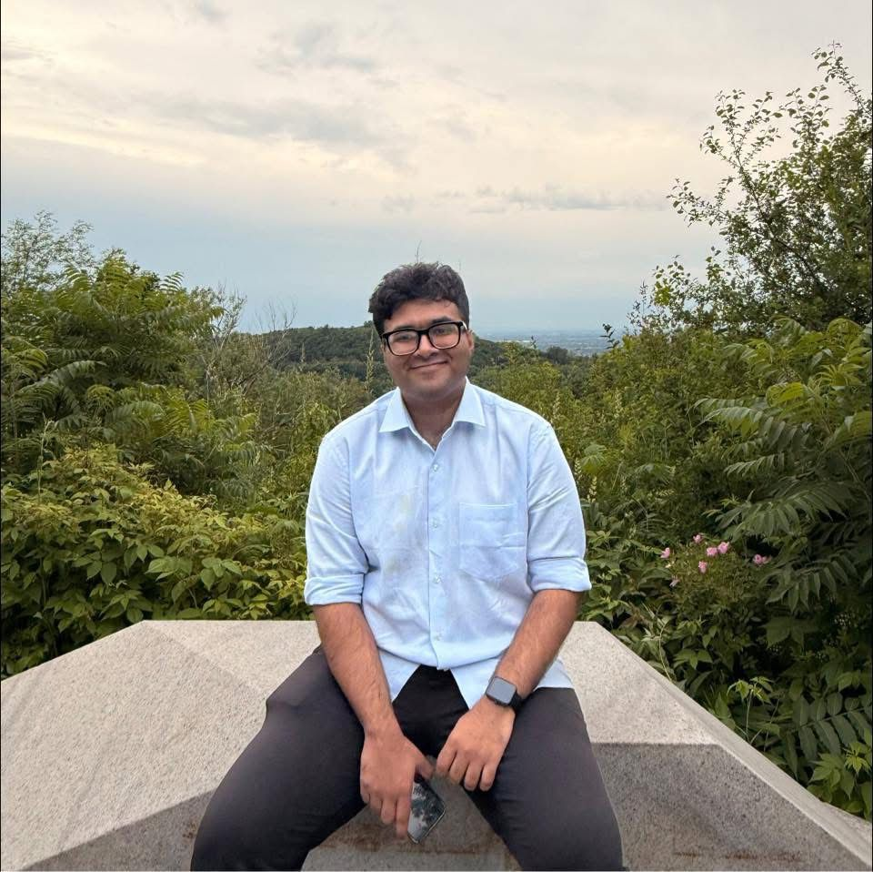

About Me
I am an MSc student at National Institute of Scientific Research (INRS), working on quantum machine learning on superconducting and photonic platforms. My current research connects quantum algorithms, quantum hardware and generative machine learning models.
Before INRS, I completed my BSc in Electrical and Electronic Engineering at Bangladesh University of Engineering and Technology (BUET), where I worked on computational photonic modeling (photonic phase-change memory, thermophotovoltaic emitters, non-linear phenomenna in Si waveguides), electrical load forecasting, analog and digital electronics, and robotics.
My main research theme is next-gen computing, tackling Moore's Law, von Neumann bottleneck and AI backbone. I enjoy solving wholistic problems regarding computing: where logic, theorems, simulation, and hardware meet in synergy; intersecting EE, CSE and Physics.
Research Interests
Quantum Information
Quantum Hardware
Neuromorphic Computing
Photonics and Optics
Analog and Digital VLSI
Computer Architecture
Generative AI
Embedded Systems
Latest updates
News
2025
Joined INRS as an MSc researcher working on quantum machine learning on photonic platforms.
2025
Published GSST-based photonic memory work in Optics Express.
2025
Thermophotovoltaic emitter work accepted in the Journal of Applied Physics.
2024
Secured recognition in ULKASEMI VLSITHON 2.0 and BUET EEE Day VLSITHON.
2023
Represented Team Interplanetar at the University Rover Challenge at MDRS, Utah.